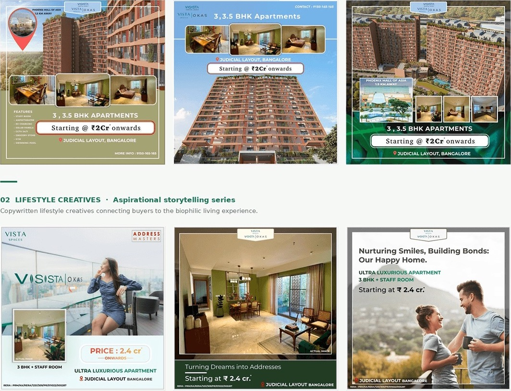
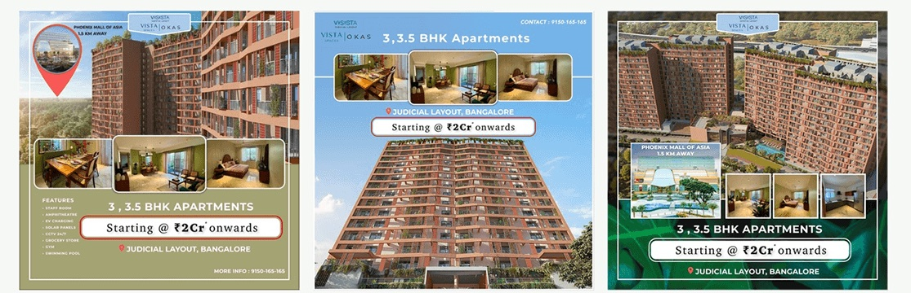
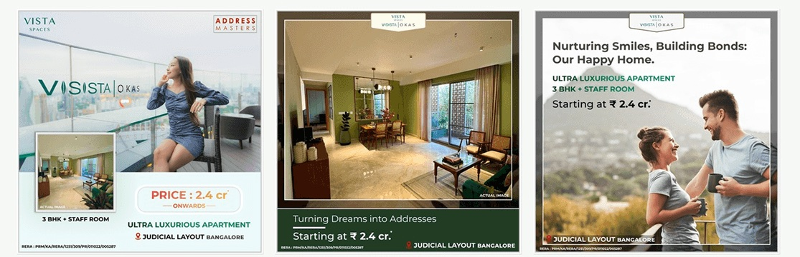
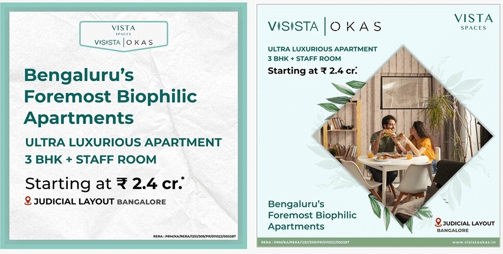
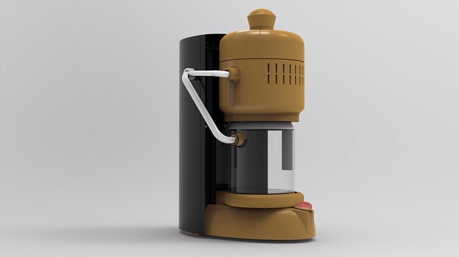

The development
Visista OKAS is Vista Spaces' 3 and 3.5 BHK apartments in Judicial Layout, Bangalore, 1.5 km from Phoenix Mall of Asia, starting at 2 crore, with an ultra-luxurious 3 BHK plus staff room from 2.4 crore. The amenities on the ads run from an amphitheatre and EV charging to solar panels, a grocery store, a gym and a swimming pool.
Three series
01 Property advertising
Multi-format ads showing the scale of the project, the interiors and the pricing.

02 Lifestyle creatives
Copywritten lifestyle creatives connecting buyers to the biophilic living experience: Turning Dreams into Addresses, and Nurturing Smiles, Building Bonds: Our Happy Home.

03 Brand identity ads
Bold positioning ads establishing Visista OKAS as Bengaluru's foremost biophilic residence.

Film
A house tour of the show apartment, shot and edited in March 2024 and published on the Address Masters channel.
Outcome
| 8+ | creatives produced |
| 3 | content series: property advertising, lifestyle and brand identity |
| 1 | campaign film, shot and edited |
The system covered both unit types, 3 and 3.5 BHK, across social, digital and print.
